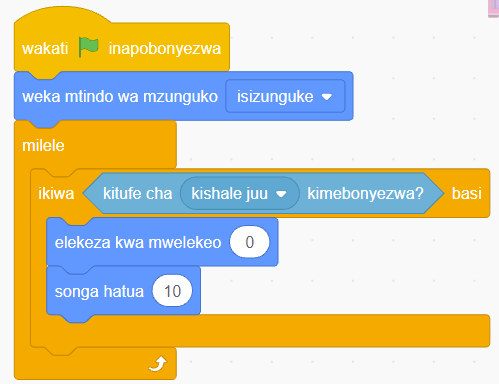
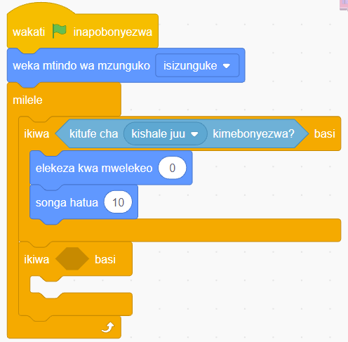

18.
Buruta na dondosha bloku ya ‘songa hatua’ kwenye eneo la kuandikia. Kisha kiingize ndani ya bloku ya ‘ikiwa basi’ na ukiunge kwenye bloku ya ‘elekeza kwa mwelekeo’ kama inavyoonekana katika Kielelezo namba 60.

Kielelezo namba 60: Bloku za elekeza kwa mwelekeo na songa hatua zikiwa zimeungwa
19.
Bofya au tumia mishale menyu ya bloku za ‘Kidhibiti’.
20.
Buruta na dondosha bloku ya ‘ikiwa basi’ kwenye eneo la kuandikia. Kisha iunganishe ndani ya bloku ya ‘milele’ kama inavyoonekana katika Kielelezo namba 61.

Kielelezo namba 61: Bloku ya ikiwa basi imeungwa kwa mara ya pili